T03 · 玩家拼图挖宝棋盘与组队卡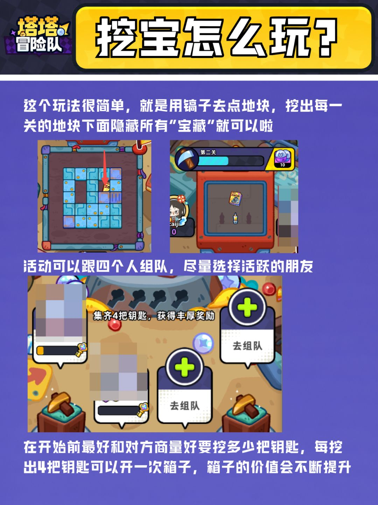可见：方格棋盘、四个组队卡与钥匙进度把玩法变成离散槽位。边界：紫底标题、白色段落及红箭头属于攻略排版。玩家挖宝攻略2026-09-09 · 1080×1443
T05 · 玩家实机塔塔持有列表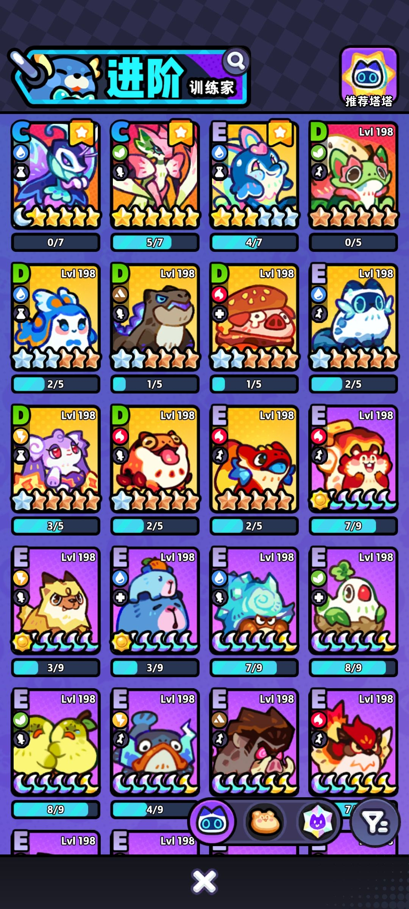可见：四列卡片固定承载元素、类型、星数、等级和进度；底部筛选悬浮。边界：这是持有角色列表，不是全图鉴；点击行为未实测。玩家角色列表2026-09-25（图片地址日期） · 1080×2400
T07 · 媒体实机营地英文版可见：深森林包住浅色空地；底角按钮有独立高对比底座。边界：旧全球版本；右侧红圈为教程标注，不能作 UI。3DM 图文实机教程2026-08-14；设置图内可见 2026-07-29 / global build · 320×704
T08 · 媒体实机个人与好友页可见：头像区、编队槽、标签页、名单卡、邀请按钮分层。边界：低分辨率旧全球服样本，不外推现版本所有菜单。3DM 图文实机教程2026-08-14；设置图内可见 2026-07-29 / global build · 320×704
T09 · 媒体实机设置弹窗可见：背景暗化与模糊，奶白面板、紫色行按钮、底部独立关闭。边界：缺少开关切换前后；局部模糊不能等同全场景柔光。3DM 图文实机教程2026-08-14；设置图内可见 2026-07-29 / global build · 320×704
T10 · 媒体实机语言选择弹窗可见：重复行按钮与固定关闭沿用设置弹窗语法。边界：底部列表裁切说明有延伸内容，滚动方式未实测。3DM 图文实机教程2026-08-14；设置图内可见 2026-07-29 / global build · 320×704
T11 · 媒体实机营地中文状态可见：功能集中在林间亮区；底部战斗、塔塔、弹珠台明确。边界：同组全球服切换中文截图，并非独立国服证据。3DM 图文实机教程2026-08-14；设置图内可见 2026-07-29 / global build · 320×704
T12 · 媒体实机章节路线页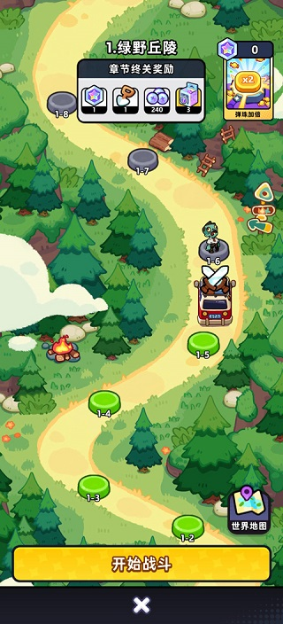可见：蛇形路径上的节点与编号；底部宽黄按钮标明开始战斗。边界：不能据此认定营地必须同样使用路线布局。3DM 图文实机教程2026-08-14；设置图内可见 2026-07-29 / global build · 320×704
T13 · 媒体实机战斗进行中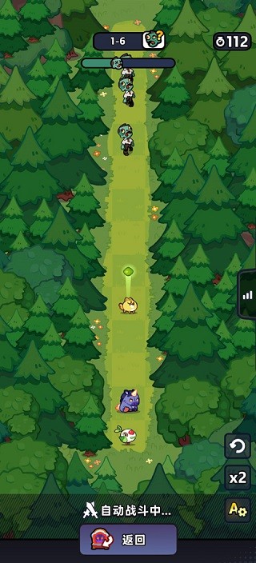可见：森林被压成两侧边界，中间长条留给战斗单位与进度。边界：动态速度、点击热区与遮挡时长未实测。3DM 图文实机教程2026-08-14；设置图内可见 2026-07-29 / global build · 320×704
T14 · 媒体实机胜利覆盖层可见：暗化场景、黄色胜利横幅、底部返回/继续构成三层。边界：不是居中卡片弹窗，证明同系统允许不同覆盖层。3DM 图文实机教程2026-08-14；设置图内可见 2026-07-29 / global build · 320×704
T16 · 媒体局部增益徽章网格局部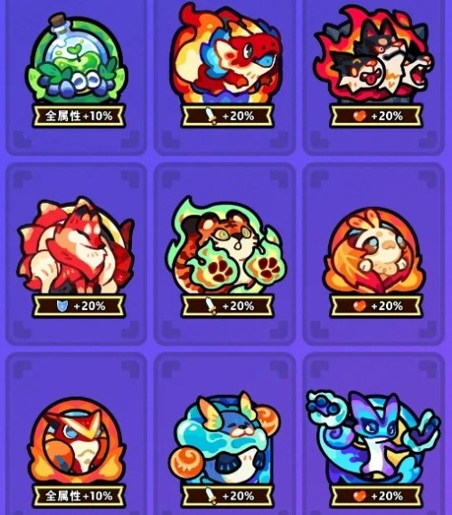可见：三列徽章每格包含角色轮廓与固定黑色增益牌。边界：旧采集名 growth；不能证明角色详情或升星确认界面。3DM 成长说明2026-09-07 · 500×570
M01 · 旧档实机打工总览与生产卡可见：建筑上方主题装饰巨大；下方店铺卡重复组织角色、计时、产物与加班。边界：上方两个建筑变暗的具体原因未知，不能直接判定未解锁。旧研究登记的玩家帖（本轮未成功重开）旧研究采集 2026-09-15；截图游戏版本未明 · 720×1520
M02 · 旧档实机角色房间、技能与角色册可见：角色在左，装备陈列在上，相框在中，下部是角色网格与技能夹板。边界：旧文件名“打工排班”不准确；画面支持角色页，不支持排班交互结论。旧研究登记的玩家帖（本轮未成功重开）旧研究采集 2026-09-15；截图游戏版本未明 · 1080×2340
M03 · 旧档实机角色房间另一选中状态可见：同一布局容纳不同角色，卡片的位置与数值字段复用。边界：旧文件名“情缘激活”不能证明状态变化的触发原因。旧研究登记的玩家帖（本轮未成功重开）旧研究采集 2026-09-15；截图游戏版本未明 · 1080×2340
M04 · 旧档实机角色列表筛选面板可见：筛选浮层用两排元素/类型图标；角色房间与列表仍可见。边界：旧文件名“战斗力与等级面板”不完整，应识别为筛选状态。旧研究登记的玩家帖（本轮未成功重开）旧研究采集 2026-09-15；截图游戏版本未明 · 1080×2340
M05 · 旧档实机委托纸板弹窗可见：三列委托便签、下方当前详情与提交；任务/委托用垂下标签切换。边界：这里只看到委托标签选中；任务页内容缺证。旧研究登记的玩家帖（本轮未成功重开）旧研究采集 2026-09-15；截图游戏版本未明 · 1536×1865
M06 · 旧档实机观光团布展选择可见：五个加号槽悬在展示区；下方书册格子选宠物；返回与出发分两端。边界：橙色手绘圈属于攻略标注；不是限时活动主页证据。旧研究登记的玩家帖（本轮未成功重开）旧研究采集 2026-09-15；截图游戏版本未明 · 1080×1889
M07 · 旧档实机周常商店可见：不同体积道具共享货架槽与价格牌，刷新规则写在横向招牌上。边界：购买确认、售罄、货币不足的完整状态缺证。旧研究登记的玩家帖（本轮未成功重开）旧研究采集 2026-09-15；截图游戏版本未明 · 1080×2099
M08 · 旧档实机挑战教学图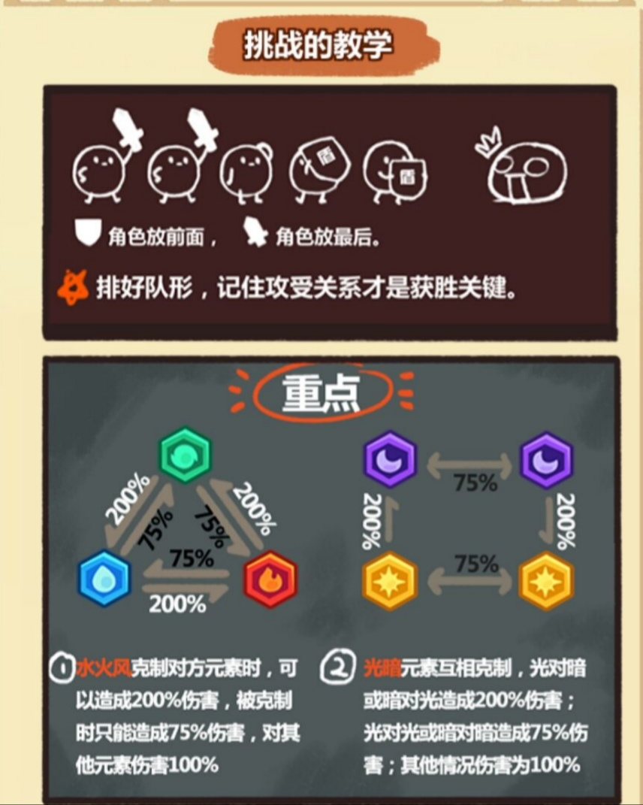可见：图标和关系箭头承担规则说明。边界：属于说明画面；不是战斗实机，完整帮助关闭结构缺证。旧研究登记的玩家帖（本轮未成功重开）旧研究采集 2026-09-15；截图游戏版本未明 · 856×1071
M09 · 旧档官方宣传神话星全景宣传可见：小星球承载密集地标，不遵守真实建筑比例。边界：官方宣传包装遮住部分 HUD，不能量测完整主界面。旧研究登记的官方商店组旧研究采集 2026-09-15；逐图 CDN 未留存 · 1080×1920
M10 · 旧档官方宣传神话星奖池宣传可见：舞台与角色展示占中央。边界：常驻奖池宣传不是限时活动完整截图。旧研究登记的官方商店组旧研究采集 2026-09-15；逐图 CDN 未留存 · 1080×1920
M11 · 旧档官方宣传探索区域选择宣传可见：单色地图轮廓、节点与页签压缩地理信息。边界：营销框与前景角色不属于可证实的运行 UI。旧研究登记的官方商店组旧研究采集 2026-09-15；逐图 CDN 未留存 · 1080×1920
M12 · 旧档官方宣传家园装饰宣传可见：斜俯视房间保留成套家具与重复装饰。边界：是完整空间反例；装修用途不能直接替代经营主界面。旧研究登记的官方商店组旧研究采集 2026-09-15；逐图 CDN 未留存 · 1080×1920
M13 · 旧档官方宣传幽灵主题群像宣传（纠错）可见：群像与外框讲主题，未见可确认收藏格。边界：旧名“图鉴收集网格”错误，不能计入图鉴覆盖。旧研究登记的官方商店组旧研究采集 2026-09-15；逐图 CDN 未留存 · 1080×1920
M14 · 旧档官方宣传章节挑战宣传可见：战斗信息被放进挂页状面板。边界：面板被营销前景遮挡，CTA 不完整。旧研究登记的官方商店组旧研究采集 2026-09-15；逐图 CDN 未留存 · 1080×1920
M15 · 旧档官方宣传星际探险全景宣传可见：小星球地标向观者展开，建筑不按远近缩到不可读。边界：仅支持画风和大构图，不能证明当前首页入口集合。旧研究登记的官方商店组旧研究采集 2026-09-15；逐图 CDN 未留存 · 1080×1920
M16 · 旧档官方宣传幽灵主题主视觉可见：群像、强光与氛围表现服务宣传。边界：不提取主页面光照规范，不用于证明 UI 系统。旧研究登记的官方商店组旧研究采集 2026-09-15；逐图 CDN 未留存 · 1080×1920
M20 · 媒体实机奖池内容收集网格可见：四列卡片保留未拥有剪影；“已有”角标和日常/活动切换可见。边界：是奖池内容列表，不等于总图鉴；当前全图鉴仍缺。游民星空角色指南2021-01-22 · 344×571
M22 · 媒体局部角色成长预览面板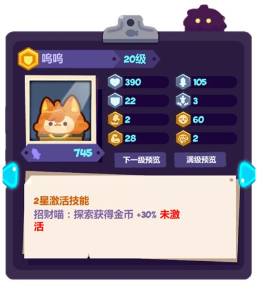可见：左头像右属性，底部技能纸条，左右箭头与两档预览。边界：抠出的面板，升级按钮与背景关系不可见。游民星空角色指南2021-01-22 · 428×483
M23 · 媒体局部角色装备与升级弹窗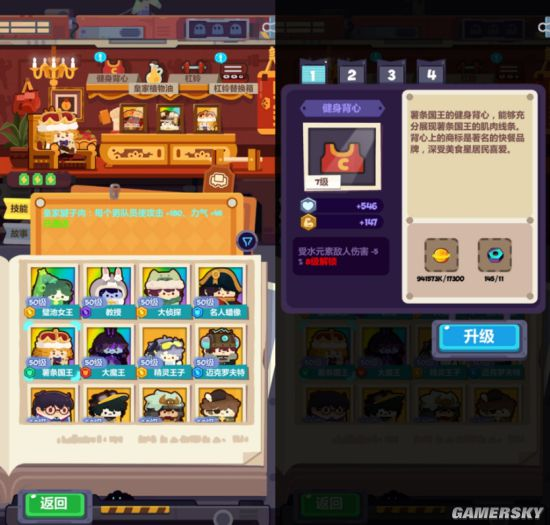可见：房间装备入口对应编号 Tab、材料槽与蓝色升级按钮。边界：媒体左右拼图；不能测量其全屏占比。游民星空角色指南2021-01-22 · 550×525
M25 · 媒体实机皮肤挑战二级弹窗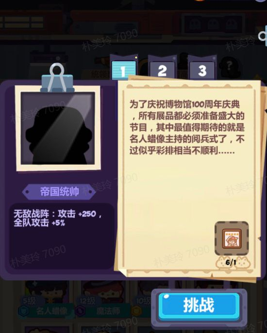可见：左剪影与加成，右故事纸页，下方材料数量与挑战按钮。边界：旧版截图；不确认当前挑战机制与按钮点击结果。游民星空角色指南2021-01-22 · 550×684
J01 · 项目浏览器留档生意：营业中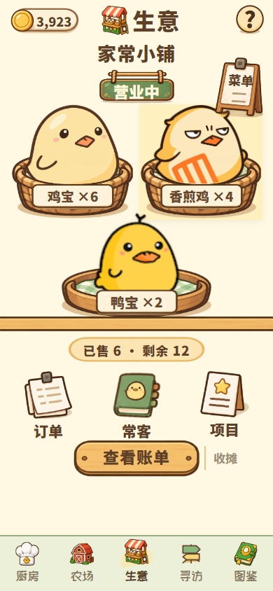可见：三个篮子形成 2+1 排列，柜台线把商品与管理区分开。边界：本轮用户认可页面族；具体截图不是本轮重新确认的版本。项目浏览器截图留档2026-09-24—25 系列；不是本轮真机采集 · 390×844
J02 · 项目浏览器留档生意：待开张空态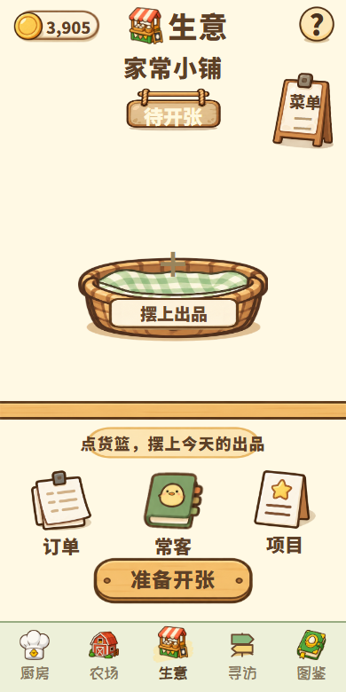可见：空篮仍占视觉中心，空位与加号显示下一步。边界：静态留档；按钮可用性不在本轮验证范围。项目浏览器截图留档2026-09-24—25 系列；不是本轮真机采集 · 390×780
J03 · 项目浏览器留档生意：当前账单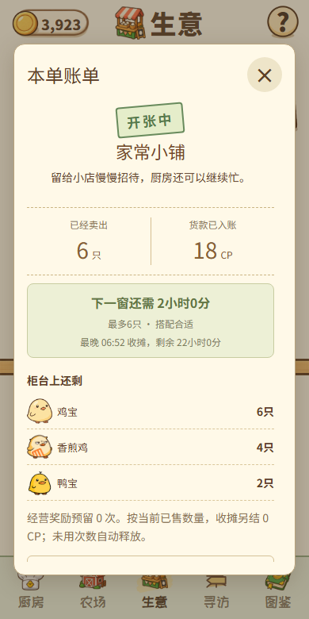可见：数字分栏、进度提示和逐项明细放入浅纸色面板。边界：比主页面更偏通用信息表单；不能把主页面成功等同所有弹窗成熟。项目浏览器截图留档2026-09-24—25 系列；不是本轮真机采集 · 390×780
J04 · 项目浏览器留档寻访：世界地图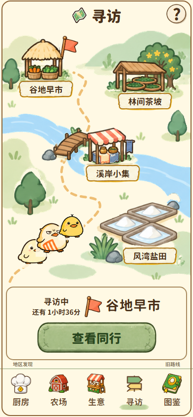可见：地标与文字牌绑定；单条虚线贯穿地图；底部行程卡单独承载状态。边界：有连续环境；不支持“所有场景必须切断空间”的结论。项目浏览器截图留档2026-09-24—25 系列；不是本轮真机采集 · 390×844
J05 · 项目浏览器留档寻访：地区页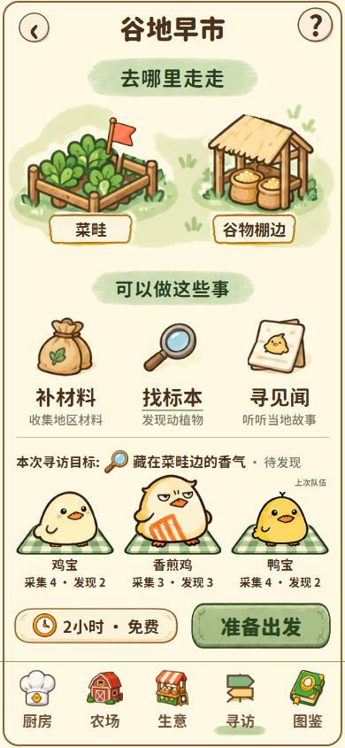可见：地点二列、行为三列、同行三列与准备出发按区分层。边界：UI 行为命名可读，真实触控与动态变化未本轮实测。项目浏览器截图留档2026-09-24—25 系列；不是本轮真机采集 · 390×844
J06 · 项目浏览器留档寻访：归来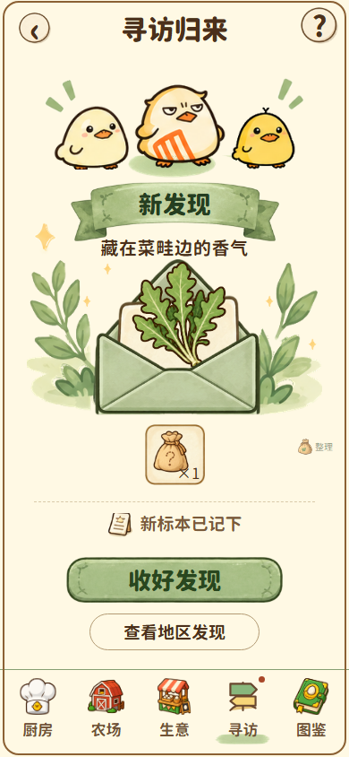可见：角色一排、大信封发现物、少量收益、上下主次操作。边界：不是普通奖励列表，每次发现物变化范围仍需历史资料。项目浏览器截图留档2026-09-24—25 系列；不是本轮真机采集 · 390×844
J07 · 项目浏览器留档图鉴：收藏册可见：二列三行贴纸网格；问号空位、进度、印章和分页同时存在。边界：此页是收藏标签；品种标签完整结构不由此推断。项目浏览器截图留档2026-09-24—25 系列；不是本轮真机采集 · 390×844
J08 · 项目浏览器留档图鉴：全未知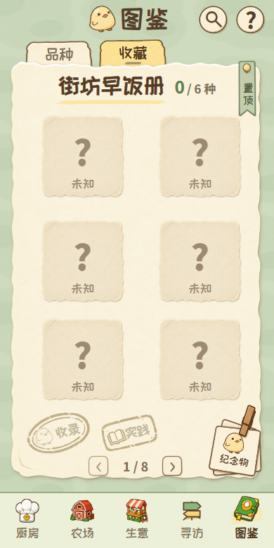可见：六个未知格保持册页布局，印章降低强调。边界：无法从静态图判断点击未知格的反馈。项目浏览器截图留档2026-09-24—25 系列；不是本轮真机采集 · 390×780
J09 · 项目浏览器留档图鉴：双印章状态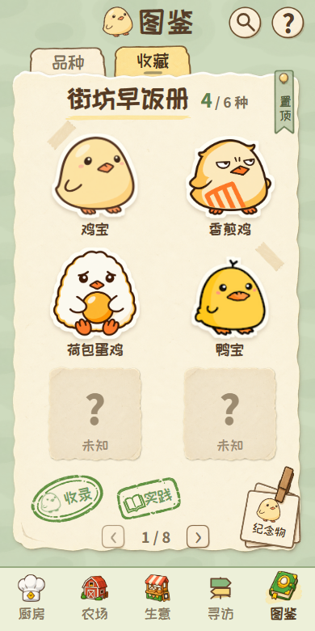可见：收录与实践使用同族但不同图标的绿色印章。边界：4/6 与双印章共同出现的业务语义需另查；这里仅比视觉状态。项目浏览器截图留档2026-09-24—25 系列；不是本轮真机采集 · 390×780
J10 · 项目浏览器留档生意：订单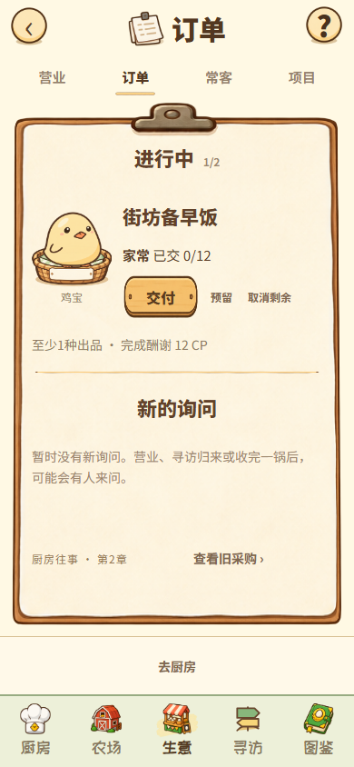可见：夹板形成内容边界，交付按钮靠近当前订单。边界：页面族二级页为辅助证据，不扩大用户审美认可范围。项目浏览器截图留档2026-09-24—25 系列；不是本轮真机采集 · 390×844
J11 · 项目浏览器留档生意：项目可见：招牌册对象居中，阶段数和继续筹备沿竖轴排列。边界：长页在视口下方延伸，不是所有内容一屏显示。项目浏览器截图留档2026-09-24—25 系列；不是本轮真机采集 · 390×844